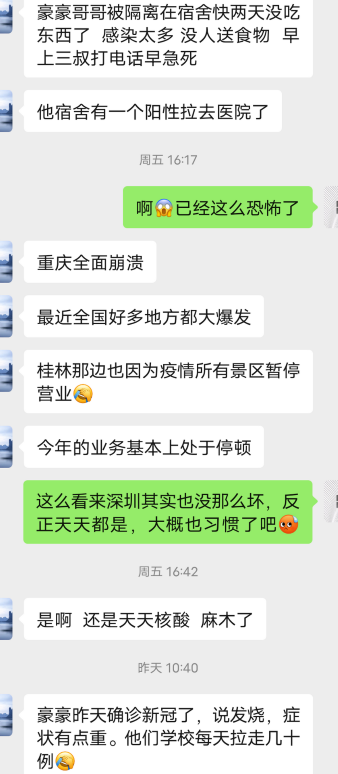
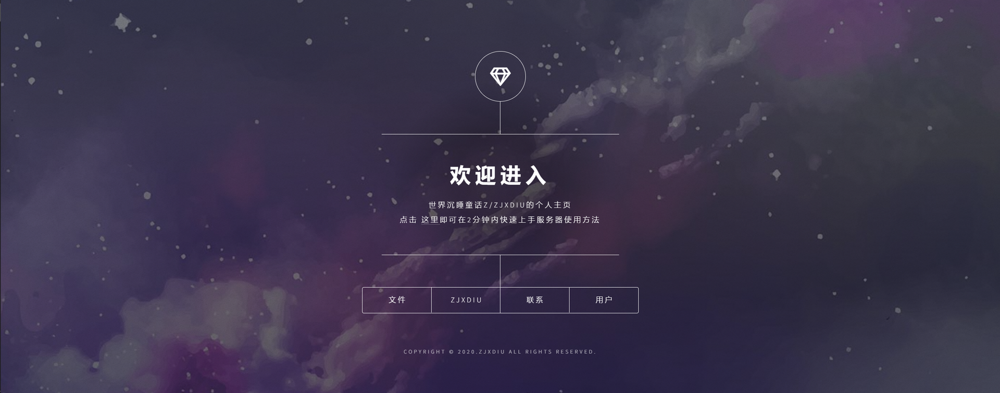

人在上课，突闻噩耗。
虽然现在的新冠并没有两年前那么恐怖，见者九死一生，但仍然是流感中较为严重的一类。
最近全国各地都突然严重爆发，我学校的老校区也出现了阳性感染者，这实在不是什么好消息。
不过，疫情虽然对经济冲击严重，但我们仍然可能可以从另一个角度思考问题，试图以积极的方式面对。
在 2020 年中，大约是（延期后的）高考结束的那个暑期，我们经历了一次非常恐怖的矿潮。那时候，显卡的价格飞涨到一个离谱都不足以形容的地步，而正值开学季的准大学生们则欲哭无泪：想买电脑，根本抢不到！
尽管当时笔记本电脑缺货更多是由于芯片供应短缺造成的，但挖矿的影响同样不可忽视。而就在大家想着如何用合理的价格买到自己心仪的显卡时，有一些人则希望大家能够从另一个角度来看待这个问题。
“有时候达成你的目标和需求不止一种方法；面对畸形的市场，与其抱怨，不如换一种新的思维来看待这件事”
这句话确实给了我不少启发和灵感。
# 这是一个给你折腾机会的完美时机
所谓折腾，就是你可以干任何以前你想干但缺乏时机的事。当然，如果你想环游世界，那可能还是之后再说吧（？）
举个例子，我利用高中被疫情困在家里的时间，自己学习了非常多的东西，包括但不限于：
- 网络工程与应用
- 服务器搭建与优化
- 网页前端设计
- 游戏开发入门
这些都是我理解的 “折腾”，平时由于高三学习压力较大、学校里不能自由使用手机和电脑，这些东西都没有机会学习和实践。
而利用好了这几个月，我认为我在折腾中收获颇丰，并为进入大学后的生活提供了十足的帮助。

这是我在一个月内做的网页前端设计，并应用于自己家庭的内网中，以便实现我的学习电脑与打印服务器电脑（配置很低很卡）之间进行快速的文件传输和通信。
# 这是一个可以锻炼你眼光的合理时机
如果要折腾，你肯定免不了要花点钱，有的甚至开销很大（比如我喜欢折腾电脑硬件，这就是花费很高的一种）。但正是因为花销大，才能锻炼我的眼光，确切来说是我选购东西的眼光。
最近正在考虑折腾一个服务器电脑。家里有闲置的笔记本和台式机，也许我可以改造台式机，重新选择 ITX 机箱和静音散热器，并将其作为服务器主机使用。
或者，也可以另外花费 240 左右购买 J1900 准系统迷你主机，这种方案的优势是被动散热无噪音、寿命长，硬盘我已经有一块可用的 SSD，还可以顺便折腾 Windows server 2007 等系统，加上我本人对能折腾的迷你电脑比较感兴趣，这似乎是不错的选择。
然而，这个方案最大的问题就是开销更多；买一个 ITX 机箱 + 低噪散热器的价格显然低于准系统 + 内存的价格，所以这就对我的选购能力提出了严峻的挑战。虽然我并没有实际购买，但在这个过程中，我能感觉到自己网购眼光的提升。
# 总结
积极面对这 ** 的世界，听起来并不是一件轻松的事，毕竟谁能在生存受阻的情况下坦然自若呢？但是，苦中作乐本就是身具人性的最大优势，而我们不应该让其淹没在无穷无尽的原始需求中。
最后，为这个尚存一线美好的世界送上祝福，希望每个真诚的人都能被温柔以待。